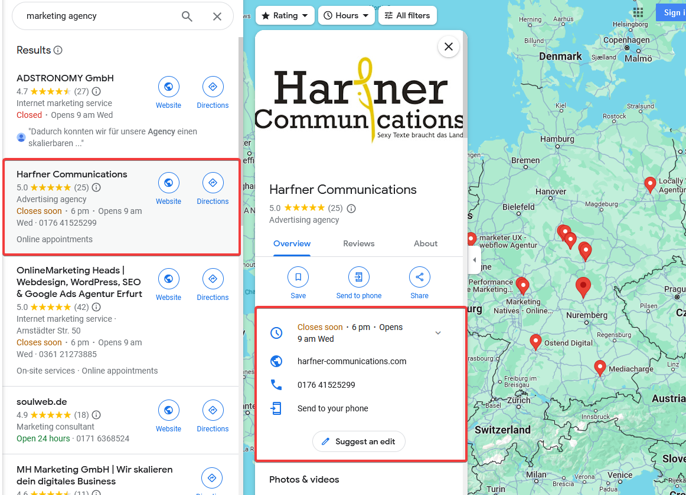

How I found you?
Table of Contents
1. Introduction
In this project I want to gather as much agencys email addresses and additional information to justify who to prioritize first, and when to send my proposal email.
2. Plan
2.1. Scraping Google map
Due to google restrictions against bots, this process will be semi-automated.
I have used the Selenium browser to open up Google Map, searched "Marketing agency near x city", and executed a script that record the result from the browser into a data frame.
The full raw data can be found here, but here is a sample:
| name | g_url | w_url | stars | b_type |
|---|---|---|---|---|
| Sojern Inc | url | url | 3.4 stars 7 Reviews | Advertising agency |
| Segal Communications | url | url | 5.0 stars 5 Reviews | Public relations firm |
| Cyrusson Inc | url | url | 5.0 stars 14 Reviews | Marketing agency |
2.2. Getting more Geo-data
From the variable "g_url" in the raw data above, I can extract the coordinate of a given agency.
For me to send emails exactly during the working hours I needed the timezone that each agency is in, so I used the coordinates to get the city and country name, among much other information.
The full raw data can be found here.
PS: If you were wondering why I couldn't get the city name in the first phase? The results of Google Maps aren't constant when it comes to displaying that information.

2.3. Getting Domain public Informations
The older an agency the better, or maybe so; getting the year of an agency's creation will be a good variable to put in the prioritization matrix, but where to find this information?
Luckily, I had the idea of looking for the agency's web domain creation date instead; sadly, some agencies have restricted such info from being publicly shared, but I can work without.
Also, another variable for the metric was the agency's web domain expiration date; we are in 2024, if a web domain owner extends the expiration date to 2028, it means that the owner trust in the agency's success in the future.
The full raw data can be found here.
2.4. Getting Website data
The data that should be gathered from each agency website is:
- Email adress
- Keywords like: career, job, opportunity, and remote.
- Data about web page content:
page_l: Number of characters(letters, number, symbols) found in the agencys homepage HTML.
url count lowkeydigital.com.au 7000855 cavalry.co.nz 14156 My reasoning for capturing this data on websites is, the more characters are there in HTML, the lower the chances the website was made by a full web stack developer.
page_t: Number of characters(letters) found in the agencys homepage text.
Paired with the above variable, I can get a ration of how much elements are in a page vs how much text, and with trial and error, hopefully, I can get a metric for prioritizing, more in the later chapter.
url count limit.agency 136655 madebymoment.com 200 page_i: Number of image tags in the the agencys homepage.
url count infinitymediala.com 7652 36creative.com 0 page_a: Number of anchor/link tags in the the agencys homepage.
url count seoagencylosangelesca.com 4644 momentumagency.co.nz 1
Data can be found here
2.5. Prioritiznig metric
- Removing all observation without an email on their website
- Making a metric for website dataframe
- The more text, images the better
- The less HTML elements, spamy links the better
- Additional keywords counts like: career, job, opportunity, and remote.
\[Wf_{score}=\frac{\log{(Page_t)}*\log{(Page_i+2)}^2}{\log{(Page_l)}*\log{(Page_a+1)}}+\log{(KeywordsCount)*2}\]
- The more text, images the better
- Laplace's rule of sucession
We could use Google map reviews, but if an agency have 5 stars from 3 reviews, and another have 4.9 stars from 10 reviews… which one is better to choose?
The Laplace's rule of succession answer this question by adding two reviews to the rating, one is a one-star review, the other is a five-star review; more about this method in 3Blue1Brown's video.
\[LRS_i=\frac{Rating_{x_i}*RatingCount_{x_i}+1+5}{RatingCount_{x_i}+2}\] - Domain importance
The older an agency domain is created the more stable the business is, and, the more months are left before the domain expiration the more confident and responsible a business is.
\[Domain_{im}=\log(CreationDate+1)+\log(MonthsUntillExpiration+1)\] Score
- PS: The score is not, by any means, an evaluation of an agency's success; it is just a way, for me, to prioritize reaching agencies via email, giving the data that I collected.
- PPS: I just added all the scores together, because some businesses have domain information private, and a zero in \(Domain_{im}\) is not a true zero to use multiplication.
\[Score=Wf_{score}+LRS_i+ Domain_{im}\]
- PS: The score is not, by any means, an evaluation of an agency's success; it is just a way, for me, to prioritize reaching agencies via email, giving the data that I collected.
the final data can be found here
2.6. Automating e-mail reaching
A lot of factors were added when it comes to sending email
- ProtonMail, the email provider I used because my full name was available at the time, is restricting the reaching to 50 email per hour, and 150 email per day.
- The time zones are a thing… if I want my email to be read, and not overshadowed, I will need to send it in working hours, preferable 11 AM; thus making the prioritization metric kinda useless.
Example: if an agency in LA scored higher than one in NY, the NY agency will receive the email first … 'cause time; as I am writing this, I found that I need to understand timezone.
3. Results
To ne updated.